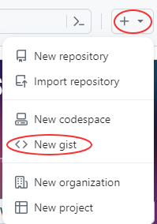
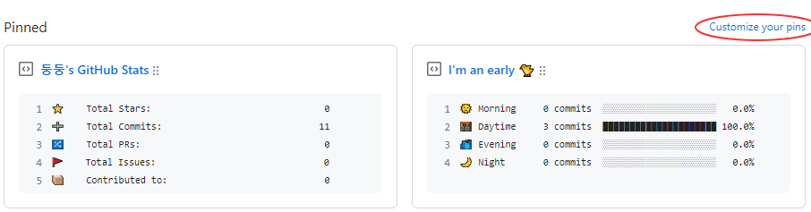
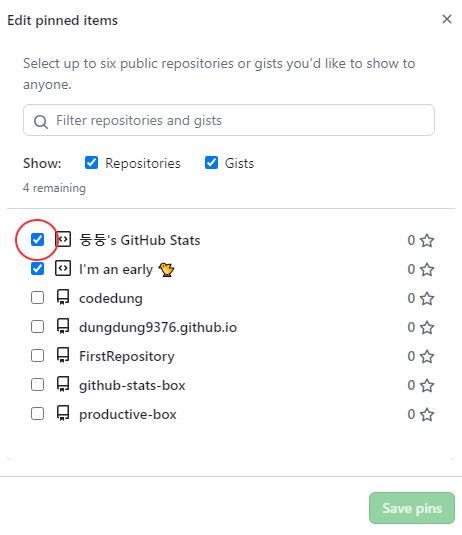

프로필을 만드는 이유로는 누군가 내 깃허브에 접속을 했을 때 저장소만 반겨주기보다 내가 어떤사람이고 어떤기술을 사용할수있고 어떤작업물이 있고 등을 알려주어 나를 소개를 할 수 있기 때문입니다.
깃 프로필을 만드는 방법은 무척이나 쉽습니다.
바로 내 아이디와 동일한 repository를 생성하고 Readme.md를 생성하면 끝이 납니다.
뱃지를 이용하여 꾸미기
Shields.io 사용하기
깃허브에 가장 많이 사용되는 뱃지로 원하는대로 커스터마이징이 가능하다.
reademe에 아래 코드를 추가합니다.
<a href="링크" target="_blank"> <img src="https://img.shields.io/badge/뱃지레이블-배경색?style=뱃지모양&logo=로고&logoColor=로고색상" /> </a>
Simple Icons에 접속하여 원하는 아이콘명과 색상정보를 받아옵니다.
- 뱃지레이블과 로고에는 아이콘 이름을 작성을 합니다.
- style에는 1. 엠보싱 효과 + 라운드 처리 : plastic 2. 라운드 처리 : flat 3. 네모박스 : flat-square 4. 네모박스 + 여백 : for-the-badge 5. 소셜 : social 5가지중에 한가지 선택하시면 됩니다.
- 배경색에는 색상정보를 입력합니다.
- 로고색상으로는 대부분 #ffffff를 사용하지만 원하는 색상이 존재 한다면 원하는 헥사코드를 가져와 사용하시면 됩니다.
프로필에서 pin을 이용하여 다양한 정보들을 보여줄 수 있는데요. 어떻게 사용하는지 알아보고자 합니다. 우선 깃토큰을 준비해주세요. 깃토큰 생성시 select scope에서 repo와 gist 체크는 꼭 해주셔야합니다.
1. 제목과 내용은 아무문자나 입력해 gist를 생성해주세요. gist를 생성을 하면 주소에 gist.github.com/gist번호가 나오는데 이때 나오는 gist번호를 잘 복사해둡니다. 
2. 여기에 접속을 하여 Fork를 합니다.
3. Fork한 내 repo에서 setting에 접속한뒤 Security에 secrets and variables안에 들어가있는 actions를 선택합니다.
4. 카테고리를 선택하면 Environment secrets와 repository secrets가 있는데 repository secrets에서 new repository secret을 눌러 총 2가지의 secrets를 생성합니다.
1. 제목 GH_TOKEN, 내용 토큰값
2. 제목 GIST_ID, 내용 gist번호
5. repository의 actions에 들어가 enable을 눌러줍니다.
6. repository로 돌아가 workflows의 schedule.yml의 환경변수를 수정을 해주는데요
env:
GH_TOKEN: ${{ secrets.GH_TOKEN }}
GIST_ID: ${{ secrets.GIST_ID }}
TIMEZONE: Asia/Seoul
로 수정을 하고 저장을 해줍니다. 이때 문제가 없다면 프로필 페이지에 가서 customize your pins를 눌러 원하는 pin을 선택을 해주면 끝입니다.  